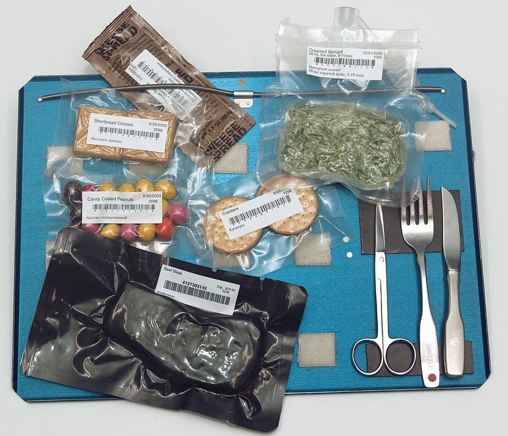
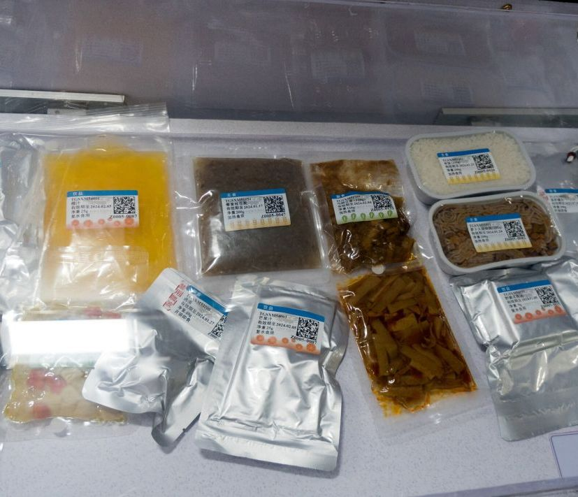

JEDZENIE W KOSMOSIE
Jedzenie w kosmosie musi być specjalnie przygotowane, bo w stanie nieważkości wszystko zachowuje się inaczej niż na Ziemi. Na pokładzie Międzynarodowa Stacja Kosmiczna nie da się normalnie gotować ani jeść w tradycyjny sposób.
Na co dzień astronauci jedzą głównie żywność przetworzoną w taki sposób, żeby była trwała i bezpieczna. Bardzo popularne są dania liofilizowane, czyli odwodnione – przed jedzeniem dodaje się do nich wodę.
Są też gotowe posiłki w szczelnych opakowaniach, które wystarczy podgrzać. Zamiast chleba używa się tortilli, bo się nie kruszą – okruszki mogłyby unosić się w powietrzu i uszkodzić sprzęt albo dostać się do oczu.
Picie wygląda inaczej niż na Ziemi, bo płyny nie opadają do kubka. Napoje trzyma się w specjalnych woreczkach i pije przez słomkę z zaworem, żeby ciecz nie wypływała swobodnie.
W kosmosie zmienia się też odczuwanie smaku. Przez przesunięcie płynów w organizmie astronauci mają wrażenie zatkanego nosa, więc jedzenie wydaje się mniej wyraziste.
Dlatego często wybierają bardziej pikantne i intensywne potrawy. Na stacji kosmicznej nie ma zwykłej kuchni. Nie używa się ognia, bo byłby zbyt niebezpieczny. Jedzenie można tylko podgrzać albo zalać gorącą wodą.
Mimo to prowadzi się eksperymenty, na przykład z uprawą warzyw, żeby w przyszłości astronauci mogli produkować część żywności sami. Pierwsze jedzenie w kosmosie było bardzo prymitywne.
Jurij Gagarin jadł pokarm w tubkach, podobnych do pasty do zębów. Z czasem jedzenie stało się bardziej różnorodne i wygodne, a dziś astronauci mają do wyboru setki produktów.
W przyszłości, szczególnie przy długich misjach, np. na Marsa, planuje się rozwój systemów pozwalających na hodowanie roślin i nawet drukowanie jedzenia w technologii 3D,
żeby dieta była bardziej urozmaicona i niezależna od dostaw z Ziemi.
Żywienie w przestrzeni kosmicznej – co jedzą kosmonauci?
Jak przygotować kosmiczne pierogi?

